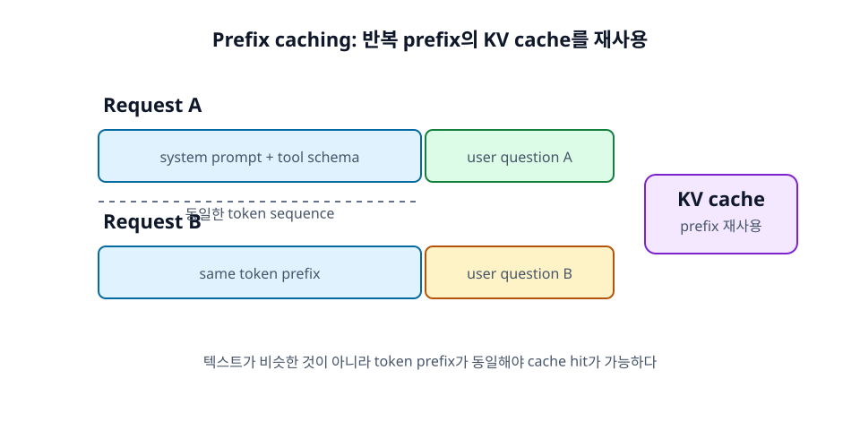

21장. SGLang 입문¶
SGLang은 LLM 애플리케이션을 단순한 한 번의 prompt 호출이 아니라 구조화된 프로그램 실행으로 바라본다. Agent, RAG, tool calling, structured output처럼 반복 prefix와 제약된 출력이 많은 workload에서 특히 중요한 아이디어를 제공한다.
이 장에서는 SGLang을 통해 RadixAttention, prefix caching, structured generation이 실제 도구에서 어떻게 연결되는지 살펴본다.

학습 목표¶
- SGLang이 겨냥하는 structured generation workload를 이해한다.
- OpenAI-compatible API 호출과 structured output 실습 흐름을 파악한다.
- RadixAttention과 prefix caching의 관계를 이해한다.
21.1 SGLang의 문제의식¶
LLM 애플리케이션은 점점 복잡해지고 있다. 단순히 "질문 하나, 답변 하나"가 아니라, 여러 단계의 reasoning, tool call, JSON output, RAG template, 반복되는 system prompt가 섞인다. SGLang은 이런 구조화된 LLM 프로그램을 효율적으로 실행하는 데 관심이 있다.
21.1.1 Structured generation¶
Structured generation은 모델이 자유로운 자연어가 아니라 정해진 schema나 grammar를 따르는 출력을 생성하게 하는 것이다. JSON, function call arguments, SQL-like structure, 선택지 기반 응답 등이 포함된다.
SGLang은 structured output을 중요한 기능으로 다룬다. Agent와 tool calling에서는 출력 형식 오류가 곧 프로그램 오류가 되기 때문에, structured generation은 안정성 측면에서 중요하다.
21.1.2 Agent/RAG workload¶
Agent와 RAG workload는 반복되는 prefix가 많다. Agent는 tool schema와 instruction을 반복하고, RAG는 template과 citation 규칙을 반복한다. 각 요청마다 달라지는 부분은 사용자 질문과 검색 문서일 수 있다.
이런 workload에서는 prefix reuse와 cache hit rate가 성능에 큰 영향을 줄 수 있다.
21.1.3 Prefix reuse¶
SGLang의 RadixAttention은 공통 prefix의 KV cache를 재사용하는 아이디어와 연결된다. 여러 요청이나 여러 generation call이 같은 prefix를 공유하면, 이미 계산한 KV 상태를 재사용해 prefill 비용을 줄일 수 있다.
입문자는 SGLang을 "structured output과 prefix reuse를 중요하게 보는 serving/runtime"으로 이해하면 된다.
21.2 기본 실행¶
SGLang의 실행 명령은 버전에 따라 차이가 있을 수 있으므로 공식 문서를 확인해야 한다. 현재 공식 문서에서 자주 보이는 기본 server 실행 흐름은 python -m sglang.launch_server --model-path <MODEL> 형태다.
21.2.1 SGLang server 실행¶
가장 단순한 예시는 다음과 같다.
python -m sglang.launch_server \
--model-path meta-llama/Llama-3.1-8B-Instruct
Host, port, tensor parallel size, memory fraction 등을 지정하는 예시는 다음과 같은 형태다.
python -m sglang.launch_server \
--model-path meta-llama/Llama-3.1-8B-Instruct \
--host 0.0.0.0 \
--port 30000 \
--tp 2 \
--mem-fraction-static 0.8
실제 모델은 license, GPU memory, 접근 권한에 맞게 선택해야 한다.
21.2.2 OpenAI-compatible API 호출¶
SGLang server는 기본적으로 OpenAI-compatible HTTP endpoint를 제공한다. Chat completions, completions, embeddings, health check 같은 endpoint를 사용할 수 있다.
Python client에서는 vLLM과 비슷하게 base URL을 바꿔 호출할 수 있다.
from openai import OpenAI
client = OpenAI(
base_url="http://localhost:30000/v1",
api_key="EMPTY",
)
response = client.chat.completions.create(
model="meta-llama/Llama-3.1-8B-Instruct",
messages=[{"role": "user", "content": "continuous batching을 간단히 설명해 줘."}],
max_tokens=128,
)
print(response.choices[0].message.content)
21.2.3 Structured output 실습¶
Structured output 실습에서는 모델에게 JSON schema나 출력 형식을 명확히 주고, 실제 응답이 parse 가능한지 확인한다. 단순 prompt 지시만으로는 실패할 수 있으므로, SGLang의 structured output 기능과 sampling parameter를 함께 확인하는 것이 좋다.
입문 실습의 목표는 복잡한 schema를 만드는 것이 아니라, "출력 형식 제약이 decode 과정에 영향을 준다"는 점을 체감하는 것이다.
21.3 성능 최적화 개념¶
SGLang은 structured generation뿐 아니라 serving 성능 최적화도 제공한다. Prefix caching, continuous batching, chunked prefill, parallelism 옵션이 workload에 따라 중요해진다.
21.3.1 RadixAttention¶
RadixAttention은 공통 prefix를 tree 구조로 관리하고 KV cache를 재사용하는 아이디어와 연결된다. 같은 system prompt나 tool schema가 반복되는 경우 prefill 비용을 줄일 수 있다.
SGLang 문서에서는 cache report를 켜 cache hit rate를 확인하는 옵션도 제공한다. 운영에서는 cache hit rate를 관찰해 prompt 구조가 cache-friendly한지 확인할 수 있다.
21.3.2 Prefix caching¶
Prefix caching은 SGLang의 강점이 드러나는 부분이다. Agent/RAG workload에서는 고정 prefix가 길어질 수 있으므로 cache reuse 효과가 커진다.
단, token sequence가 동일해야 재사용이 가능하다. Prompt template을 자주 바꾸거나 동적 값을 앞부분에 넣으면 cache hit가 줄어든다.
21.3.3 Continuous batching¶
SGLang도 modern serving 엔진처럼 continuous batching을 중요하게 다룬다. 요청 길이가 다양하고 structured output 제약이 있는 상황에서도 GPU를 효율적으로 사용하려면 scheduler가 중요하다.
Structured generation은 decode 후보를 제한할 수 있으므로, 일반 free-form generation과 다른 overhead가 생길 수 있다. 따라서 품질과 성능을 함께 측정해야 한다.
정리¶
SGLang은 structured generation, Agent/RAG workload, prefix reuse에 초점을 둔 LLM serving/runtime이다. python -m sglang.launch_server --model-path ...로 OpenAI-compatible server를 실행할 수 있고, RadixAttention과 prefix caching을 통해 반복 prefix가 많은 workload에서 이점을 얻을 수 있다.
점검 질문¶
- SGLang은 어떤 workload에서 장점이 커지는가?
- RadixAttention은 prefix reuse와 어떻게 연결되는가?
다음 장으로¶
다음 장에서는 NVIDIA GPU에 최적화된 production 지향 프레임워크인 TensorRT-LLM을 개념적으로 살펴본다.